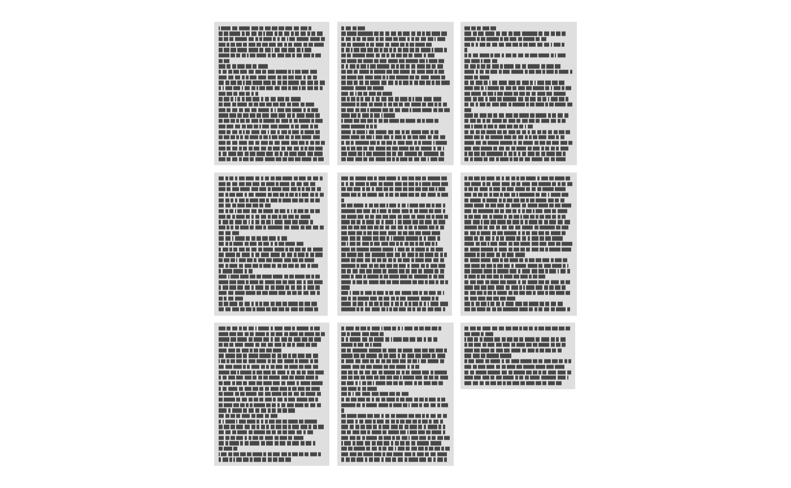

ggpage features
Emil Hvitfeldt
2018-12-29
different-features.RmdVariable paragraph length
The ggpage package allows for variable length of paragraphs if the text doesn’t hold information regarding paragraphs. This is done by supplying the variable.paragraph.length argument in ggpage_build with a function that generate random natural numbers. Such as the rpois function.
library(magrittr)
library(dplyr)
library(ggpage)
book <- tinderbox %>%
tidytext::unnest_tokens(text, text)
ggpage_build(book, para.fun = rpois, lambda = 75) %>%
ggpage_plot()
ggpage_build(book, para.fun = rpois, lambda = 75) %>%
ggpage_plot()ggpage_build(book, para.fun = rpois, lambda = 500) %>%
ggpage_plot()
ggpage_build(book, para.fun = rpois, lambda = 500) %>%
ggpage_plot()
Show paper
With the newest update ggpage allows you to draw a rectangle around each “page”.
ggpage_build(tinderbox) %>%
ggpage_plot(paper.show = TRUE)
It allows you use specify a color both as a constant,
ggpage_build(tinderbox) %>%
ggpage_plot(paper.show = TRUE, paper.color = "pink")
or by a string of colors. In this case a faded rainbow.
ggpage_build(tinderbox) %>%
ggpage_plot(paper.show = TRUE, paper.color = rainbow(9), paper.alpha = 0.3)Show page number
It can be hard to see the order of the pages in the standard vizualization. However it is possible to add a page number in the sides or corners of each page.
directions <- c("top", "top-right", "right", "bottom-right", "bottom",
"bottom-left", "left", "top-left")
ggpage_build(tinderbox) %>%
ggpage_plot(page.number = directions[1])ggpage_build(tinderbox) %>%
ggpage_plot(page.number = directions[2])ggpage_build(tinderbox) %>%
ggpage_plot(page.number = directions[3])
ggpage_build(tinderbox) %>%
ggpage_plot(page.number = directions[4])ggpage_build(tinderbox) %>%
ggpage_plot(page.number = directions[5])
ggpage_build(tinderbox) %>%
ggpage_plot(page.number = directions[6])ggpage_build(tinderbox) %>%
ggpage_plot(page.number = directions[7])
ggpage_build(tinderbox) %>%
ggpage_plot(page.number = directions[8])
Variable page length
The package also support a variable page length. This can be helpful when a collection of smaller texts are considered in the same vizualisation such as tweets.
tinderbox %>%
mutate(short = ceiling(seq_len(nrow(tinderbox)) / 10)) %>%
ggpage_build(page.col = "short", lpp = 10) %>%
ggpage_plot()Centering
ggpage now supports left, right and both-sided alignments.
ggpage_build(tinderbox, align = "right") %>%
ggpage_plot()
ggpage_build(tinderbox, align = "both") %>%
ggpage_plot()
Paragraph to line
Lastly for convience does ggpage include a way to transform a data.frame with paragraph tokens to a data.frame with line tokens.
nest_paragraphs(data = tinderbox_paragraph, input = text) %>%
head()
#> text
#> 1 A soldier came marching along the high road: "Left, right - left, right." He
#> 2 had his knapsack on his back, and a sword at his side; he had been to the wars,
#> 3 and was now returning home. As he walked on, he met a very frightful-looking old
#> 4 witch in the road. Her under-lip hung quite down on her breast, and she stopped
#> 5 and said, "Good evening, soldier; you have a very fine sword, and a large
#> 6 knapsack, and you are a real soldier; so you shall have as much money as ever
nest_paragraphs(tinderbox_paragraph, text, width = 40) %>%
head()
#> text
#> 1 A soldier came marching along the high
#> 2 road: "Left, right - left, right." He
#> 3 had his knapsack on his back, and a
#> 4 sword at his side; he had been to the
#> 5 wars, and was now returning home. As
#> 6 he walked on, he met a very frightful-